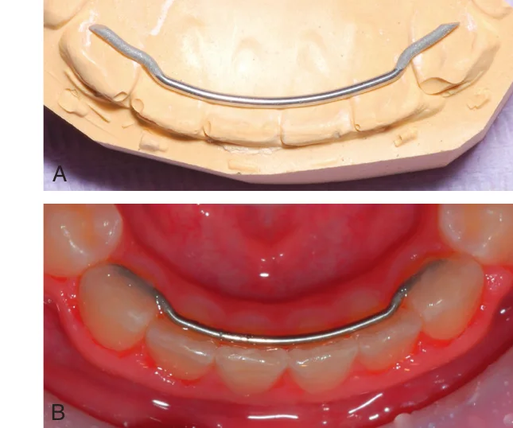
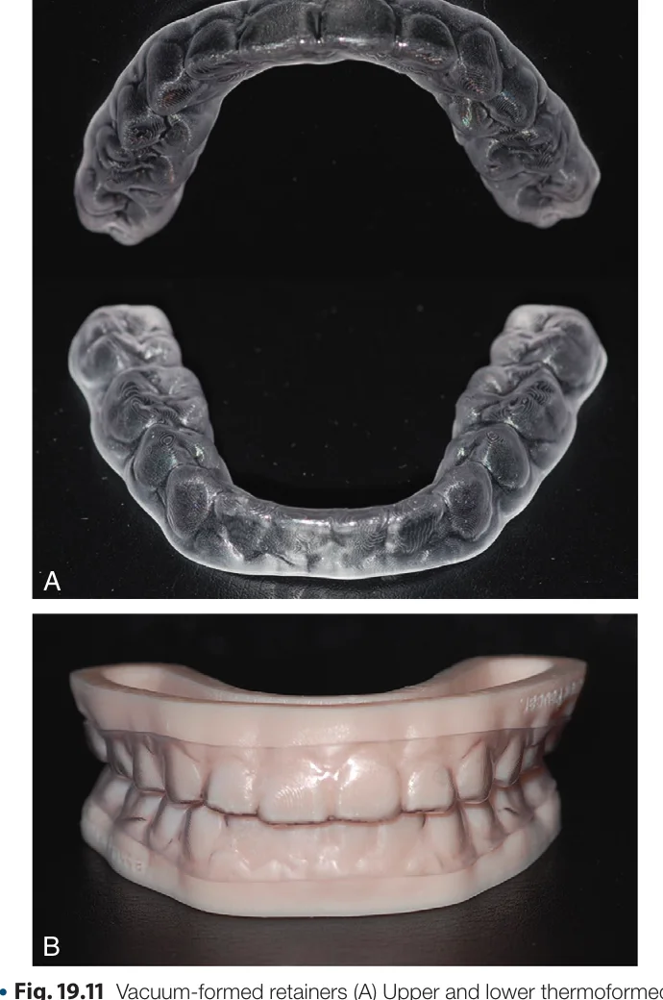

نسخه استخراجشده؛ ترجمه یا تأیید علمی انجام نشده است. وضعیت: captured
سیم چسبیده به سطح لینگوال دندانهای قدامی، رایجترین ریتینر ثابت است.
مزیت اصلی: مستقل از همکاری بیمار کار میکند — و همین آن را برای قدام پایین، جایی که کراودینگ دیررس شایع است، به انتخاب نخست تبدیل کرده.
هزینهاش: بهداشت دشوارتر (هرچند در پیگیری بیستساله آسیبی به سلامت پریودنتال دیده نشده) و خطر حرکت ناخواستهی بیعلامت. اگر سیم در یک نقطه جدا شود یا فعال شود، میتواند دندان را بیسروصدا جابهجا یا تورک آن را عوض کند؛ شکست باند بیشتر در دو سال نخست رخ میدهد.
پس ریتینر ثابت یعنی پایش دورهای اجباری. «بگذار و فراموش کن» دربارهی آن صدق نمیکند.

دو خانوادهی رایج:
هاولی: بیس اکریلی با کلاسپ و لبیال بو. بادوام و قابل تنظیم است، اجازهی نشستن عمودی اکلوژن (ستلینگ) را میدهد و صفحهی کامیاش میتواند جلوی عمیقشدن دوبارهی بایت را بگیرد.
ترموپلاستیک شفاف: تقریباً نامرئی و راحت است و بر گفتار اثری ندارد؛ بیشتر بیماران آن را ترجیح میدهند و منظمتر میزنند، و در حفظ ردیف انسیزورها با ریتینر ثابت تفاوتی ندارد. در عوض چون سطح اکلوزال را میپوشاند، ستلینگ اکلوزالی را محدود میکند، عمیقشدن بایت را به خوبی هاولی مهار نمیکند و پس از ۶ تا ۹ ماه ممکن است ترک بخورد و تغییر رنگ دهد.
الگوی رایج: استفادهی روزانه (دستکم حدود ۱۲ ساعت؛ عملاً جز هنگام غذا) در ۳ تا ۴ ماه نخست، سپس کاهش تدریجی به شبها برای دستکم ۱۲ ماه — و اگر رشد باقی است، ادامهی شبانه تا پایان رشد.
در انتخاب، به سه چیز نگاه کن: نوع حرکت انجامشده، خطر عود، و واقعبینانه بودن همکاری بیمار.

خطای رایج این است که برای همهی بیماران یک نوع ریتینر تجویز شود.
سه نمونه که انتخاب را عوض میکنند: بیماری که دیاستم بسته شده — فیبرهای کشیدهی بیندندانی نیروی عود قوی میسازند، پس ریتینر ثابت منطقیتر است. بیماری که روتیشن شدید اصلاح شده — همان منطق، و گاهی بههمراه فیبروتومی. بیماری با اپنبایت اصلاحشده — عود بیشتر از رویش دوبارهی مولرهای بالا در رشد عمودی دیررس است (هر ۱ میلیمتر رویش مولر حدود ۲ میلیمتر اپنبایت قدامی میسازد)، پس ریتینر متحرک بالا با بایتبلاک خلفی لازم است که با فاصلهانداختن بین دندانهای خلفی جلوی رویش را بگیرد. بایتبلاک اینتروژن نمیکند، فقط مانع رویش میشود؛ هدگیر high-pull جایگزین آن است. کارایی ریتینر ترموپلاستیک در این بیماران هنوز شواهد کافی ندارد.
و یک هشدار: ریتینر ثابت بدون برنامهی پایش، از نبود ریتینر خطرناکتر است — چون بیمار و درمانگر هر دو خیالشان راحت است.